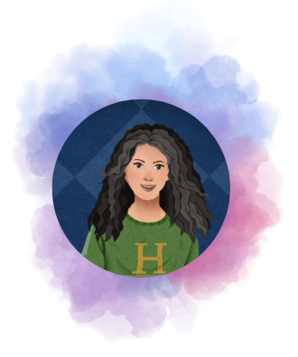

Converted Python Computer Vision code to C++ for subsequent deployment in Android.
Mercedes-Benz Research and Development India (MBRDI)
November 2020 – November 2021
Analyzed sensor data from test drives
Used Python (pandas, NumPy, UDFs), PySpark and SQL for Big Data analytics and optimization of codes.
Wrote object-oriented code and worked in sprint-based development.
BETR Project – Defence Advanced Research Projects Agency (DARPA)
July 2021 – February 2022
This project was a collaboration of DARPA, Columbia University and Harvard University.
Predicted stages of the wound healing process using ultrasound images and protein data.
Worked with TensorFlow, Keras, and a little bit of PyTorch.
Worked on CNNs (ImageNets like ResNet50) and CNN-LSTMs (time series).
Compared model predictions for stacked models (predictions made with each timestamp for separate models) versus the last timestamp model.
YoungWonks: Python Instructor
February 2022 – August 2024
Taught Computer Science concepts using Python and Scratch to students between the ages of 6 and 18.
Within the first 45 days, 14 students enrolled based on my demo classes.

Hi, I am Hridaya Annuncio. I like Computer Science and Maths. And that's why I even created a YouTube channel to share their beauty. Hope you have fun working on whatever subjects intrigue you :)